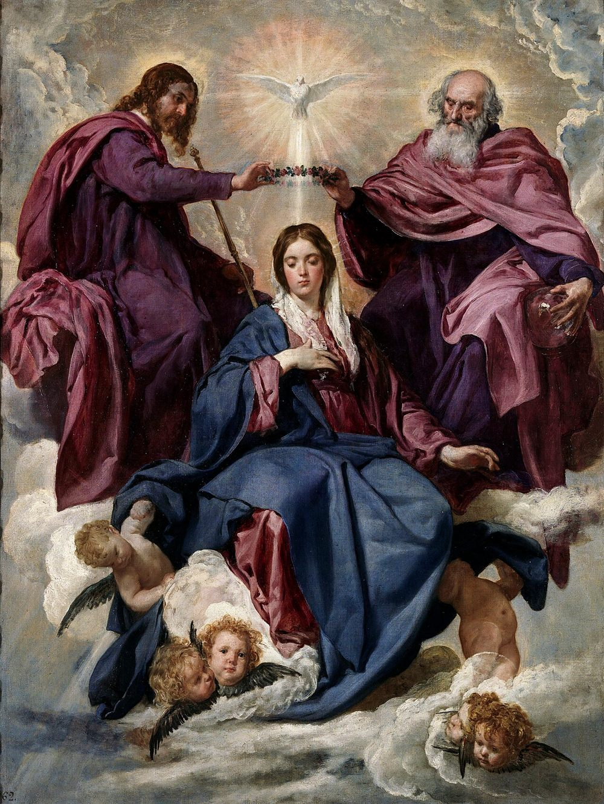

The Blessed Virgin Mary, Queen of Heaven

We who belong to the Ordo Militantium Reginae Caeli bear her name upon our lips and upon our seal. Reginae Caeli — Queen of Heaven. These are not merely beautiful words. They are a declaration, a proclamation, a battle standard planted firmly in the ground of eternity.
She is the woman of the Apocalypse, clothed with the sun, the moon beneath her feet, and upon her head a crown of twelve stars — the very image enshrined upon our shield. She is the Theotokos, the God-bearer, proclaimed at Ephesus in 431. She is the Immaculate Conception, solemnly defined by Blessed Pius IX in 1854. She is the Queen assumed body and soul into Heaven, as Pius XII defined in Munificentissimus Deus in 1950.
She is not a legend. She is not a symbol. She is a person, a mother — our mother — reigning in glory at the right hand of her Divine Son.
What does a Queen expect of her soldiers? Loyalty. Constancy. The willingness to stand when all around are kneeling before the idols of the age. She does not ask for fair-weather devotion. She asks for hearts that are hers — wholly, entirely, without reservation.
The members of this Order are bound to the daily Rosary and to the First Saturdays kept devoutly, and to the works of mercy that flow from a Marian heart. These are not heavy burdens laid upon the unwilling. They are the ordinary shape of a life given to her.
Under her mantle we take refuge. Under her banner we march. Our devotion to her is the heart and soul of this Order, and everything else we do proceeds from it.
"The salvation of the world began through Mary and through Mary it must be accomplished." — St. Louis de Montfort
Our motto is the oldest known prayer to Our Lady, older than the creeds men quarrel over, found upon a scrap of Egyptian papyrus from the third century: Sub tuum praesidium confugimus, Sancta Dei Genetrix. Under thy protection we take refuge, O Holy Mother of God.
Christians were praying those words while the persecutions were still running. We pray them now for the same reason they did.
The Order is open to practicing Catholics who feel called to serve Our Lady and defend the Traditional Faith.